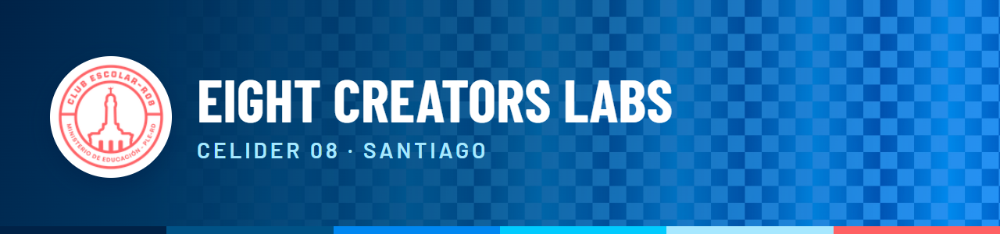
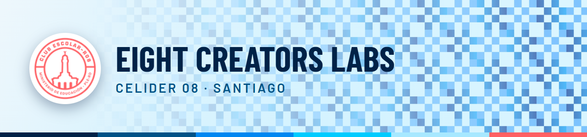

Correos nuevos: tres propuestas
Los tres usan la línea gráfica del sistema: la franja de seis colores, el patrón de cuadros que se degrada, el isotipo en círculo y la tipografía condensada. Todos se arman con tablas y estilos en línea (lo que aceptan Gmail, Outlook y Apple Mail). El mismo correo de ejemplo en las tres: «Tarea asignada».
A · Marca oscura
La misma cara del portal en modo oscuro: cabecera con degradado azul y patrón que se desvanece, tarjeta navy y botón coral. Se ve igual en cualquier cliente.
Nueva tarea: Reel del evento de cierreEIGHT CREATORS LABs · para Ana
 |
● Tareas
Te asignaron una tarea nueva
Hola Ana, Sofía te asignó Reel del evento de cierre. Revisa los detalles y confirma que la viste.
|
| Plazo | 15 de noviembre · en 6 días |
| Rol | Fotografía |
| Asignada por | Sofía Secretaria |
|
| Abrir la tarea
¿No abre el botón? Copia este enlace: eight-coms.vercel.app/user.html#ir/trabajos |
|
Mensaje del portal EIGHT CREATORS LABs · CELIDER 08 Santiago
Puedes elegir qué avisos recibir por correo en Mi cuenta → Preferencias.
|
B · Vidrio claro
Fondo cian muy suave y una tarjeta blanca de esquinas amplias con sombra, como el tema claro del portal. Más luminoso; se lee bien al aire libre y en el celular.
Nueva tarea: Reel del evento de cierreEIGHT CREATORS LABs · para Ana
 |
● Tareas
Te asignaron una tarea nueva
Hola Ana, Sofía te asignó Reel del evento de cierre. Revisa los detalles y confirma que la viste.
|
| Plazo | 15 de noviembre · en 6 días |
| Rol | Fotografía |
| Asignada por | Sofía Secretaria |
|
| Abrir la tarea
¿No abre el botón? Copia este enlace: eight-coms.vercel.app/user.html#ir/trabajos |
Mensaje del portal EIGHT CREATORS LABs · CELIDER 08 Santiago
Puedes elegir qué avisos recibir por correo en Mi cuenta → Preferencias.
|
C · Titular sobre el patrón
El título vive dentro de la cabecera, sobre el degradado y el patrón, igual que el saludo del Inicio. Menos bloques, más aire; el dato clave va en una ficha grande.
Nueva tarea: Reel del evento de cierreEIGHT CREATORS LABs · para Ana
| Eight Creators Labs · Tareas |
Hola Ana,
tienes una tarea nueva
|
|
Sofía te asignó Reel del evento de cierre. Confirma que la viste y revisa el plazo.
Plazo 6 días 15 de noviembre |
|
Rol Fotografía Asigna: Sofía Secretaria |
|
| Abrir la tarea |
|
Mensaje del portal EIGHT CREATORS LABs · CELIDER 08 Santiago
Elige qué avisos recibir en Mi cuenta → Preferencias.
|
Qué cambia en todos los correos
- Una sola cabecera de marca (imagen con degradado, patrón que se desvanece, isotipo y franja de seis colores) en lugar del texto plano «EIGHT CREATORS» de hoy.
- Etiqueta de categoría con punto de color (Tareas, Calificaciones, Equipos, Actividades, Cuenta) para reconocer el aviso de un vistazo.
- Ficha de datos con esquinas redondeadas en lugar de la tabla recta; los datos opcionales se esconden solos si no hay valor (como hoy).
- Botón en píldora (coral con texto navy, o navy con texto blanco en la versión clara). Nunca blanco sobre coral: no pasa el contraste.
- Los códigos de acceso (iniciar sesión, confirmar) usan el mismo armazón, con el código en una ficha grande centrada.
- Límites reales del correo: no hay desenfoque de vidrio ni tipografías de la marca en la mayoría de los clientes; los títulos usan Barlow Condensed donde se pueda y Arial Narrow si no. Outlook de escritorio no dibuja esquinas redondeadas ni imágenes de fondo (en C cae a azul liso: se ve limpio, solo menos vistoso).
- Lo que no se toca: los textos, los asuntos y qué datos viajan en cada aviso (nunca notas ni comentarios). Cambia solo la presentación.
Mi recomendación
- A (marca oscura) como base: es idéntica a cómo se ve el portal, se ve igual en cualquier cliente y no depende de que el cliente respete el modo claro/oscuro.
- Tomar de C la ficha grande (plazo / rol) para los avisos con una cifra clave, y de B la variante clara para quien tenga el correo en modo claro (se puede servir según el cliente).